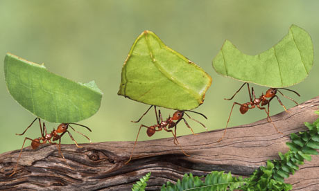
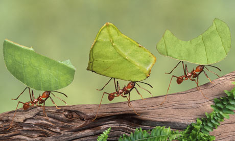

Ant
Ants are social insects of the family Formicidae /fɔrˈmɪsɨdiː/ and, along with the related wasps and bees, belong to the order Hymenoptera. Ants evolved from wasp-like ancestors in the mid-Cretaceous period between 110 and 130 million years ago and diversified after the rise of flowering plants. More than 12,500 out of an estimated total of 22,000 species have been classified. They are easily identified by their elbowed antennae and a distinctive node-like structure that forms a slender waist.
Ants form colonies that range in size from a few dozen predatory individuals living in small natural cavities to highly organised colonies that may occupy large territories and consist of millions of individuals. Larger colonies consist mostly of sterile wingless females forming castes of "workers", "soldiers", or other specialised groups. Nearly all ant colonies also have some fertile males called "drones" and one or more fertile females called "queens". The colonies sometimes are described as superorganisms because the ants appear to operate as a unified entity, collectively working together to support the colony.
Ants have colonised almost every landmass on Earth. The only places lacking indigenous ants are Antarctica and a few remote or inhospitable islands. Ants thrive in most ecosystems and may form 15–25% of the terrestrial animal biomass. Their success in so many environments has been attributed to their social organisation and their ability to modify habitats, tap resources, and defend themselves. Their long co-evolution with other species has led to mimetic, commensal, parasitic, and mutualistic relationships.
Ant societies have division of labour, communication between individuals, and an ability to solve complex problems. These parallels with human societies have long been an inspiration and subject of study. Many human cultures make use of ants in cuisine, medication, and rituals. Some species are valued in their role as biological pest control agents. Their ability to exploit resources may bring ants into conflict with humans, however, as they can damage crops and invade buildings. Some species, such as the red imported fire ant (Solenopsis invicta), are regarded as invasive species, establishing themselves in areas where they have been introduced accidentally.
Etymology
The word ant is derived from ante, emete of Middle English which are derived from ǣmette of Old English and is related to the dialectal Dutch emt and the Old High German āmeiza, hence the modern German Ameise. All of these words come from West Germanic *ēmaitijǭ, and the original meaning of the word was "the biter" (from Proto-Germanic *ai-, "off, away" + *mait- "cut"). The family name Formicidae is derived from the Latin formīca ("ant") from which the words in other Romance languages such as the Portuguese formiga, Italian formica, Spanish hormiga, Romanian furnică and French fourmi are derived. It has been hypothesised that a Proto-Indo-European word *morwi- was used, cf. Sanskrit vamrah, Latin formīca, Greek μύρμηξ mýrmēx, Old Church Slavonic mraviji, Old Irish moirb, Old Norse maurr, Dutch mier.
Taxonomy and evolution
The family Formicidae belongs to the order Hymenoptera, which also includes sawflies, bees, and wasps. Ants evolved from a lineage within the Aculeate wasps and a 2013 study suggests that they are a sister group of the Apoidea. In 1966, E. O. Wilson and his colleagues identified the fossil remains of an ant (Sphecomyrma) that lived in the Cretaceous period. The specimen, trapped in amber dating back to around 92 million years ago, has features found in some wasps but not found in modern ants. Sphecomyrma possibly was a ground forager, while Haidomyrmex and Haidomyrmodes, related genera in subfamily Sphecomyrminae are reconstructed as active arboreal predators. After the rise of flowering plants about 100 million years ago they diversified and assumed ecological dominance around 60 million years ago. Some groups such as the Leptanillinae and Martialinae are suggested to have diversified from early primitive ants which were likely to have been predators underneath the surface of the soil.
During the Cretaceous period, a few species of primitive ants ranged widely on the Laurasian super-continent (the northern hemisphere). They were scarce in comparison to the populations of other insects, representing only approximately 1% of the entire insect population. Ants became dominant after adaptive radiation at the beginning of the Paleogene period. By the Oligocene and Miocene ants had come to represent 20–40% of all insects found in major fossil deposits. Of the species that lived in the Eocene epoch, approximately one in ten genera survive to the present. Genera surviving today comprise 56% of the genera in Baltic amber fossils (early Oligocene), and 92% of the genera in Dominican amber fossils (apparently early Miocene).
Termites, although sometimes called white ants, are not ants. They belong to the order Isoptera. Termites are more closely related to cockroaches and mantids. Termites are eusocial, but differ greatly in the genetics of reproduction. That their social structure is similar to that of ants, is attributed to convergent evolution. Velvet ants look like large ants, but are wingless female wasps.
Distribution and diversity
Ants are found on all continents except Antarctica, and only a few large islands such as Greenland, Iceland, parts of Polynesia and the Hawaiian Islands lack native ant species. Ants occupy a wide range of ecological niches, and are able to exploit a wide range of food resources either as direct or indirect herbivores, predators, and scavengers. Most species are omnivorous generalists, but a few are specialist feeders. Their ecological dominance may be measured by their biomass and estimates in different environments suggest that they contribute 15–20% (on average and nearly 25% in the tropics) of the total terrestrial animal biomass, which exceeds that of the vertebrates.
Ants range in size from 0.75 to 52 millimetres (0.030–2.0 in), the largest species being the fossil Titanomyrma giganteum, the queen of which was 6 centimetres (2.4 in) long with a wingspan of 15 centimetres (5.9 in). Ants vary in colour; most ants are red or black, but a few species are green and some tropical species have a metallic lustre. More than 12,000 species are currently known (with upper estimates of the potential existence of about 22,000) (see the article List of ant genera), with the greatest diversity in the tropics. Taxonomic studies continue to resolve the classification and systematics of ants. Online databases of ant species, including AntBase and the Hymenoptera Name Server, help to keep track of the known and newly described species. The relative ease with which ants may be sampled and studied in ecosystems has made them useful as indicator species in biodiversity studies.
Morphology
Ants are distinct in their morphology from other insects in having elbowed antennae, metapleural glands, and a strong constriction of their second abdominal segment into a node-like petiole. The head, mesosoma, and metasoma are the three distinct body segments. The petiole forms a narrow waist between their mesosoma (thorax plus the first abdominal segment, which is fused to it) and gaster (abdomen less the abdominal segments in the petiole). The petiole may be formed by one or two nodes (the second alone, or the second and third abdominal segments).
Like other insects, ants have an exoskeleton, an external covering that provides a protective casing around the body and a point of attachment for muscles, in contrast to the internal skeletons of humans and other vertebrates. Insects do not have lungs; oxygen and other gases such as carbon dioxide pass through their exoskeleton via tiny valves called spiracles. Insects also lack closed blood vessels; instead, they have a long, thin, perforated tube along the top of the body (called the "dorsal aorta") that functions like a heart, and pumps haemolymph toward the head, thus driving the circulation of the internal fluids. The nervous system consists of a ventral nerve cord that runs the length of the body, with several ganglia and branches along the way reaching into the extremities of the appendages.
Head
An ant's head contains many sensory organs. Like most insects, ants have compound eyes made from numerous tiny lenses attached together. Ant eyes are good for acute movement detection, but do not offer a high resolution image. They also have three small ocelli (simple eyes) on the top of the head that detect light levels and polarization. Compared to vertebrates, most ants have poor-to-mediocre eyesight and a few subterranean species are completely blind. Some ants such as Australia's bulldog ant, however, have excellent vision and are capable of discriminating the distance and size of objects moving nearly a metre away.
Two antennae ("feelers") are attached to the head; these organs detect chemicals, air currents, and vibrations; they also are used to transmit and receive signals through touch. The head has two strong jaws, the mandibles, used to carry food, manipulate objects, construct nests, and for defence. In some species a small pocket (infrabuccal chamber) inside the mouth stores food, so it may be passed to other ants or their larvae.
Legs
All six legs are attached to the mesosoma ("thorax"). A hooked claw at the end of each leg helps ants to climb and to hang onto surfaces.
Wings
Only reproductive ants, queens and males, have wings. Queens shed the wings after the nuptial flight, leaving visible stubs, a distinguishing feature of queens. Wingless queens (ergatoids) and males occur in a few species, however.
Metasoma
The metasoma (the "abdomen") of the ant houses important internal organs, including those of the reproductive, respiratory (tracheae), and excretory systems. Workers of many species have their egg-laying structures modified into stings that are used for subduing prey and defending their nests.
Polymorphism
In the colonies of a few ant species, there are physical castes—workers in distinct size-classes, called minor, median, and major workers. Often the larger ants have disproportionately larger heads, and correspondingly stronger mandibles. Such individuals sometimes are called "soldier" ants because their stronger mandibles make them more effective in fighting, although they still are workers and their "duties" typically do not vary greatly from the minor or median workers. In a few species the median workers are absent, creating a sharp divide between the minors and majors.Weaver ants, for example, have a distinct bimodal size distribution. Some other species show continuous variation in the size of workers. The smallest and largest workers in Pheidologeton diversus show nearly a 500-fold difference in their dry-weights.Workers cannot mate; however, because of the haplodiploid sex-determination system in ants, workers of a number of species can lay unfertilised eggs that become fully fertile, haploid males. The role of workers may change with their age and in some species, such as honeypot ants, young workers are fed until their gasters are distended, and act as living food storage vessels. These food storage workers are called repletes. For instance, these replete workers develop in the North American honeypot ant Myrmecocystus mexicanus. Rissing found that usually the largest workers in the colony develop into repletes, and if repletes are removed from the colony other workers become repletes, demonstrating the flexibility of this particular polymorphism. This polymorphism in morphology and behaviour of workers initially was thought to be determined by environmental factors such as nutrition and hormones that led to different developmental paths; however, genetic differences between worker castes have been noted in Acromyrmex sp. These polymorphisms are caused by relatively small genetic changes; differences in a single gene of Solenopsis invicta can decide whether the colony will have single or multiple queens. The Australian jack jumper ant (Myrmecia pilosula) has only a single pair of chromosomes (with the males having just one chromosome as they are haploid), the lowest number known for any animal, making it an interesting subject for studies in the genetics and developmental biology of social insects.
Development and reproduction
The life of an ant starts from an egg. If the egg is fertilised, the progeny will be female (diploid); if not, it will be male (haploid). Ants develop by complete metamorphosis with the larva stages passing through a pupal stage before emerging as an adult. The larva is largely immobile and is fed and cared for by workers.
Food is given to the larvae by trophallaxis, a process in which an ant regurgitates liquid food held in its crop. This is also how adults share food, stored in the "social stomach". Larvae may also be provided with solid food such as trophic eggs, pieces of prey, and seeds brought back by foraging workers and the larvae may even be transported directly to captured prey in some species.
The larvae grow through a series of moults and enter the pupal stage. The pupa has the appendages free and not fused to the body as in a butterfly pupa.The differentiation into queens and workers (which are both female), and different castes of workers (when they exist), is influenced in some species by the nutrition the larvae obtain. Genetic influences and the control of gene expression by the developmental environment are complex and the determination of caste continues to be a subject of research. Larvae and pupae need to be kept at fairly constant temperatures to ensure proper development, and so often, are moved around among the various brood chambers within the colony.
A new worker spends the first few days of its adult life caring for the queen and young. She then graduates to digging and other nest work, and later to defending the nest and foraging. These changes are sometimes fairly sudden, and define what are called temporal castes. An explanation for the sequence is suggested by the high casualties involved in foraging, making it an acceptable risk only for ants who are older and are likely to die soon of natural causes.Most ant species have a system in which only the queen and breeding females have the ability to mate. Contrary to popular belief, some ant nests have multiple queens while others may exist without queens. Workers with the ability to reproduce are called "gamergates" and colonies that lack queens are then called gamergate colonies; colonies with queens are said to be queen-right. The winged male ants, called drones, emerge from pupae along with the breeding females (although some species, such as army ants, have wingless queens), and do nothing in life except eat and mate.
Most ants are univoltine, producing a new generation each year. During the species-specific breeding period, new reproductives, females and winged males leave the colony in what is called a nuptial flight. Typically, the males take flight before the females. Males then use visual cues to find a common mating ground, for example, a landmark such as a pine tree to which other males in the area converge. Males secrete a mating pheromone that females follow. Females of some species mate with just one male, but in some others they may mate with as many as ten or more different males.
Mated females then seek a suitable place to begin a colony. There, they break off their wings and begin to lay and care for eggs. The females store the sperm they obtain during their nuptial flight to selectively fertilise future eggs. The first workers to hatch are weak and smaller than later workers, but they begin to serve the colony immediately. They enlarge the nest, forage for food, and care for the other eggs. This is how new colonies start in most ant species. Species that have multiple queens may have a queen leaving the nest along with some workers to found a colony at a new site, a process akin to swarming in honeybees. A wide range of reproductive strategies have been noted in ant species. Females of many species are known to be capable of reproducing asexually through thelytokous parthenogenesis and one species, Mycocepurus smithii, is known to be all-female.
Ant colonies can be long-lived. The queens can live for up to 30 years, and workers live from 1 to 3 years. Males, however, are more transitory, being quite short-lived and surviving for only a few weeks. Ant queens are estimated to live 100 times longer than solitary insects of a similar size.
Ants are active all year long in the tropics, but, in cooler regions, they survive the winter in a state of dormancy or inactivity. The forms of inactivity are varied and some temperate species have larvae going into the inactive state, (diapause), while in others, the adults alone pass the winter in a state of reduced activity.
Behaviour and ecology
Communication
Ants communicate with each other using pheromones, sounds, and touch. The use of pheromones as chemical signals is more developed in ants, such as the red harvester ant, than in other hymenopteran groups. Like other insects, ants perceive smells with their long, thin, and mobile antennae. The paired antennae provide information about the direction and intensity of scents. Since most ants live on the ground, they use the soil surface to leave pheromone trails that may be followed by other ants. In species that forage in groups, a forager that finds food marks a trail on the way back to the colony; this trail is followed by other ants, these ants then reinforce the trail when they head back with food to the colony. When the food source is exhausted, no new trails are marked by returning ants and the scent slowly dissipates. This behaviour helps ants deal with changes in their environment. For instance, when an established path to a food source is blocked by an obstacle, the foragers leave the path to explore new routes. If an ant is successful, it leaves a new trail marking the shortest route on its return. Successful trails are followed by more ants, reinforcing better routes and gradually identifying the best path.
Ants use pheromones for more than just making trails. A crushed ant emits an alarm pheromone that sends nearby ants into an attack frenzy and attracts more ants from farther away. Several ant species even use "propaganda pheromones" to confuse enemy ants and make them fight among themselves. Pheromones are produced by a wide range of structures including Dufour's glands, poison glands and glands on the hindgut, pygidium, rectum, sternum, and hind tibia. Pheromones also are exchanged, mixed with food, and passed by trophallaxis, transferring information within the colony. This allows other ants to detect what task group (e.g., foraging or nest maintenance) other colony members belong to. In ant species with queen castes, when the dominant queen stops producing a specific pheromone, workers begin to raise new queens in the colony.
Some ants produce sounds by stridulation, using the gaster segments and their mandibles. Sounds may be used to communicate with colony members or with other species.
Defence
Ants attack and defend themselves by biting and, in many species, by stinging, often injecting or spraying chemicals such as formic acid. Bullet ants (Paraponera), located in Central and South America, are considered to have the most painful sting of any insect, although it is usually not fatal to humans.This sting is given the highest rating on the Schmidt Sting Pain Index.
The sting of jack jumper ants can be fatal, and an antivenom has been developed for it.
Fire ants, Solenopsis spp., are unique in having a poison sac containing piperidine alkaloids. Their stings are painful and can be dangerous to hypersensitive people.
Trap-jaw ants of the genus Odontomachus are equipped with mandibles called trap-jaws, which snap shut faster than any other predatory appendages within the animal kingdom. One study of Odontomachus bauri recorded peak speeds of between 126 and 230 km/h (78 – 143 mph), with the jaws closing within 130 microseconds on average. The ants were also observed to use their jaws as a catapult to eject intruders or fling themselves backward to escape a threat. Before striking, the ant opens its mandibles extremely widely and locks them in this position by an internal mechanism. Energy is stored in a thick band of muscle and explosively released when triggered by the stimulation of sensory organs resembling hairs on the inside of the mandibles. The mandibles also permit slow and fine movements for other tasks. Trap-jaws also are seen in the following genera: Anochetus, Orectognathus, and Strumigenys, plus some members of the Dacetini tribe, which are viewed as examples of convergent evolution.
A Malaysian species of ant in the Camponotus cylindricus group has enlarged mandibular glands that extend into their gaster. When disturbed, workers rupture the membrane of the gaster, causing a burst of secretions containing acetophenones and other chemicals that immobilise small insect attackers. The worker subsequently dies.
Suicidal defences by workers are also noted in a Brazilian ant, Forelius pusillus, where a small group of ants leaves the security of the nest after sealing the entrance from the outside each evening.
In addition to defence against predators, ants need to protect their colonies from pathogens. Some worker ants maintain the hygiene of the colony and their activities include undertaking or necrophory, the disposal of dead nest-mates. Oleic acid has been identified as the compound released from dead ants that triggers necrophoric behaviour in Atta mexicana while workers of Linepithema humile react to the absence of characteristic chemicals (dolichodial and iridomyrmecin) present on the cuticle of their living nestmates to trigger similar behaviour.
Nests may be protected from physical threats such as flooding and overheating by elaborate nest architecture. Workers of Cataulacus muticus, an arboreal species that lives in plant hollows, respond to flooding by drinking water inside the nest, and excreting it outside. Camponotus anderseni, which nests in the cavities of wood in mangrove habitats, deals with submergence under water by switching to anaerobic respiration.
Learning
Many animals can learn behaviours by imitation, but ants may be the only group apart from mammals where interactive teaching has been observed. A knowledgeable forager of Temnothorax albipennis will lead a naive nest-mate to newly discovered food by the process of tandem running. The follower obtains knowledge through its leading tutor. The leader is acutely sensitive to the progress of the follower and slows down when the follower lags and speeds up when the follower gets too close.
Controlled experiments with colonies of Cerapachys biroi suggest that an individual may choose nest roles based on her previous experience. An entire generation of identical workers was divided into two groups whose outcome in food foraging was controlled. One group was continually rewarded with prey, while it was made certain that the other failed. As a result, members of the successful group intensified their foraging attempts while the unsuccessful group ventured out fewer and fewer times. A month later, the successful foragers continued in their role while the others had moved to specialise in brood care.
Nest construction
Complex nests are built by many ant species, but other species are nomadic and do not build permanent structures. Ants may form subterranean nests or build them on trees. These nests may be found in the ground, under stones or logs, inside logs, hollow stems, or even acorns. The materials used for construction include soil and plant matter, and ants carefully select their nest sites; Temnothorax albipennis will avoid sites with dead ants, as these may indicate the presence of pests or disease. They are quick to abandon established nests at the first sign of threats.
The army ants of South America, such as the Eciton burchellii species, and the driver ants of Africa do not build permanent nests, but instead, alternate between nomadism and stages where the workers form a temporary nest (bivouac) from their own bodies, by holding each other together.
Weaver ant (Oecophylla spp.) workers build nests in trees by attaching leaves together, first pulling them together with bridges of workers and then inducing their larvae to produce silk as they are moved along the leaf edges. Similar forms of nest construction are seen in some species of Polyrhachis.
Formica polyctena, among other ant species, constructs nests that maintain a relatively constant interior temperature that aids in the development of larvae. The ants maintain the nest temperature by choosing the location, nest materials, controlling ventilation and maintaining the heat from solar radiation, worker activity and metabolism, and in some moist nests, microbial activity in the nest materials.
Some ant species such as those that use natural cavities can be opportunistic and make use of the controlled micro-climate provided inside human dwellings and other artificial structures to house their colonies and nest structures.
Cultivation of food
Most ants are generalist predators, scavengers, and indirect herbivores, but a few have evolved specialised ways of obtaining nutrition. Leafcutter ants (Atta and Acromyrmex) feed exclusively on a fungus that grows only within their colonies. They continually collect leaves which are taken to the colony, cut into tiny pieces and placed in fungal gardens. Workers specialise in related tasks according to their sizes. The largest ants cut stalks, smaller workers chew the leaves and the smallest tend the fungus. Leafcutter ants are sensitive enough to recognise the reaction of the fungus to different plant material, apparently detecting chemical signals from the fungus. If a particular type of leaf is found to be toxic to the fungus, the colony will no longer collect it. The ants feed on structures produced by the fungi called gongylidia. Symbiotic bacteria on the exterior surface of the ants produce antibiotics that kill bacteria introduced into the nest that may harm the fungi.
Navigation
Foraging ants travel distances of up to 200 metres (700 ft) from their nest and scent trails allow them to find their way back even in the dark. In hot and arid regions, day-foraging ants face death by desiccation, so the ability to find the shortest route back to the nest reduces that risk. Diurnal desert ants of the genus Cataglyphis such as the Sahara desert ant navigate by keeping track of direction as well as distance travelled. Distances travelled are measured using an internal pedometer that keeps count of the steps taken and also by evaluating the movement of objects in their visual field (optical flow). Directions are measured using the position of the sun. They integrate this information to find the shortest route back to their nest. Like all ants, they can also make use of visual landmarks when available as well as olfactory and tactile cues to navigate. Some species of ant are able to use the Earth's magnetic field for navigation. The compound eyes of ants have specialised cells that detect polarised light from the Sun, which is used to determine direction. These polarization detectors are sensitive in the ultraviolet region of the light spectrum. In some army ant species, a group of foragers who become separated from the main column sometimes may turn back on themselves and form a circular ant mill. The workers may then run around continuously until they die of exhaustion.
Locomotion
The female worker ants do not have wings and reproductive females lose their wings after their mating flights in order to begin their colonies. Therefore, unlike their wasp ancestors, most ants travel by walking. Some species are capable of leaping. For example, Jerdon's jumping ant (Harpegnathos saltator) is able to jump by synchronising the action of its mid and hind pairs of legs. There are several species of gliding ant including Cephalotes atratus; this may be a common trait among most arboreal ants. Ants with this ability are able to control the direction of their descent while falling.Other species of ants can form chains to bridge gaps over water, underground, or through spaces in vegetation. Some species also form floating rafts that help them survive floods. These rafts may also have a role in allowing ants to colonise islands. Polyrhachis sokolova, a species of ant found in Australian mangrove swamps, can swim and live in underwater nests. Since they lack gills, they go to trapped pockets of air in the submerged nests to breathe.
Cooperation and competition
Not all ants have the same kind of societies. The Australian bulldog ants are among the biggest and most basal of ants. Like virtually all ants, they are eusocial, but their social behaviour is poorly developed compared to other species. Each individual hunts alone, using her large eyes instead of chemical senses to find prey.
Some species (such as Tetramorium caespitum) attack and take over neighbouring ant colonies. Others are less expansionist, but just as aggressive; they invade colonies to steal eggs or larvae, which they either eat or raise as workers or slaves. Extreme specialists among these slave-raiding ants, such as the Amazon ants, are incapable of feeding themselves and need captured workers to survive. Captured workers of the enslaved species Temnothorax have evolved a counter strategy, destroying just the female pupae of the slave-making Protomognathus americanus, but sparing the males (who don't take part in slave-raiding as adults).Ants identify kin and nestmates through their scent, which comes from hydrocarbon-laced secretions that coat their exoskeletons. If an ant is separated from its original colony, it will eventually lose the colony scent. Any ant that enters a colony without a matching scent will be attacked. Also, the reason why two separate colonies of ants will attack each other even if they are of the same species is because the genes responsible for pheromone production are different between them. The Argentine ant, however, does not have this characteristic, due to lack of genetic diversity, and has become a global pest because of it.
Parasitic ant species enter the colonies of host ants and establish themselves as social parasites; species such as Strumigenys xenos are entirely parasitic and do not have workers, but instead, rely on the food gathered by their Strumigenys perplexa hosts. This form of parasitism is seen across many ant genera, but the parasitic ant is usually a species that is closely related to its host. A variety of methods are employed to enter the nest of the host ant. A parasitic queen may enter the host nest before the first brood has hatched, establishing herself prior to development of a colony scent. Other species use pheromones to confuse the host ants or to trick them into carrying the parasitic queen into the nest. Some simply fight their way into the nest.
A conflict between the sexes of a species is seen in some species of ants with these reproducers apparently competing to produce offspring that are as closely related to them as possible. The most extreme form involves the production of clonal offspring. An extreme of sexual conflict is seen in Wasmannia auropunctata, where the queens produce diploid daughters by thelytokous parthenogenesis and males produce clones by a process whereby a diploid egg loses its maternal contribution to produce haploid males who are clones of the father.
Relationships with other organisms
Aphids and other hemipteran insects secrete a sweet liquid called honeydew, when they feed on plant sap. The sugars in honeydew are a high-energy food source, which many ant species collect. In some cases, the aphids secrete the honeydew in response to ants tapping them with their antennae. The ants in turn keep predators away from the aphids and will move them from one feeding location to another. When migrating to a new area, many colonies will take the aphids with them, to ensure a continued supply of honeydew. Ants also tend mealybugs to harvest their honeydew. Mealybugs may become a serious pest of pineapples if ants are present to protect mealybugs from their natural enemies.
Myrmecophilous (ant-loving) caterpillars of the butterfly family Lycaenidae (e.g., blues, coppers, or hairstreaks) are herded by the ants, led to feeding areas in the daytime, and brought inside the ants' nest at night. The caterpillars have a gland which secretes honeydew when the ants massage them. Some caterpillars produce vibrations and sounds that are perceived by the ants. Other caterpillars have evolved from ant-loving to ant-eating: these myrmecophagous caterpillars secrete a pheromone that makes the ants act as if the caterpillar is one of their own larvae. The caterpillar is then taken into the ant nest where it feeds on the ant larvae.Fungus-growing ants that make up the tribe Attini, including leafcutter ants, cultivate certain species of fungus in the Leucoagaricus or Leucocoprinus genera of the Agaricaceae family. In this ant-fungus mutualism, both species depend on each other for survival. The ant Allomerus decemarticulatus has evolved a three-way association with the host plant, Hirtella physophora (Chrysobalanaceae), and a sticky fungus which is used to trap their insect prey.Lemon ants make devil's gardens by killing surrounding plants with their stings and leaving a pure patch of lemon ant trees, (Duroia hirsuta). This modification of the forest provides the ants with more nesting sites inside the stems of the Duroia trees. Although some ants obtain nectar from flowers, pollination by ants is somewhat rare. Some plants have special nectar exuding structures, extrafloral nectaries that provide food for ants, which in turn protect the plant from more damaging herbivorous insects. Species such as the bullhorn acacia (Acacia cornigera) in Central America have hollow thorns that house colonies of stinging ants (Pseudomyrmex ferruginea) who defend the tree against insects, browsing mammals, and epiphytic vines. Isotopic labelling studies suggest that plants also obtain nitrogen from the ants. In return, the ants obtain food from protein- and lipid-rich Beltian bodies. Another example of this type of ectosymbiosis comes from the Macaranga tree, which has stems adapted to house colonies of Crematogaster ants.
Many tropical tree species have seeds that are dispersed by ants. Seed dispersal by ants or myrmecochory is widespread and new estimates suggest that nearly 9% of all plant species may have such ant associations. Some plants in fire-prone grassland systems are particularly dependent on ants for their survival and dispersal as the seeds are transported to safety below the ground. Many ant-dispersed seeds have special external structures, elaiosomes, that are sought after by ants as food.
A convergence, possibly a form of mimicry, is seen in the eggs of stick insects. They have an edible elaiosome-like structure and are taken into the ant nest where the young hatch.Most ants are predatory and some prey on and obtain food from other social insects including other ants. Some species specialise in preying on termites (Megaponera and Termitopone) while a few Cerapachyinae prey on other ants. Some termites, including Nasutitermes corniger, form associations with certain ant species to keep away predatory ant species. The tropical wasp Mischocyttarus drewseni coats the pedicel of its nest with an ant-repellent chemical. It is suggested that many tropical wasps may build their nests in trees and cover them to protect themselves from ants. Stingless bees (Trigona and Melipona) use chemical defences against ants.
Flies in the Old World genus Bengalia (Calliphoridae) prey on ants and are kleptoparasites, snatching prey or brood from the mandibles of adult ants. Wingless and legless females of the Malaysian phorid fly (Vestigipoda myrmolarvoidea) live in the nests of ants of the genus Aenictus and are cared for by the ants.
Fungi in the genera Cordyceps and Ophiocordyceps infect ants. Ants react to their infection by climbing up plants and sinking their mandibles into plant tissue. The fungus kills the ants, grows on their remains, and produces a fruiting body. It appears that the fungus alters the behaviour of the ant to help disperse its spores in a microhabitat that best suits the fungus. Strepsipteran parasites also manipulate their ant host to climb grass stems, to help the parasite find mates.
A nematode (Myrmeconema neotropicum) that infects canopy ants (Cephalotes atratus) causes the black-coloured gasters of workers to turn red. The parasite also alters the behaviour of the ant, causing them to carry their gasters high. The conspicuous red gasters are mistaken by birds for ripe fruits such as Hyeronima alchorneoides and eaten. The droppings of the bird are collected by other ants and fed to their young, leading to further spread of the nematode.South American poison dart frogs in the genus Dendrobates feed mainly on ants, and the toxins in their skin may come from the ants.
Army ants forage in a wide roving column, attacking any animals in that path that are unable to escape. In Central and South America, Eciton burchellii is the swarming ant most commonly attended by "ant-following" birds such as antbirds and woodcreepers. This behaviour was once considered mutualistic, but later studies found the birds to be parasitic. Although direct kleptoparasitism (birds stealing food from the ants' grasp) is rare, the birds eat many prey insects that the ants would otherwise eat and thus decrease their foraging success. Birds indulge in a peculiar behaviour called anting that, as yet, is not fully understood. Here birds rest on ant nests, or pick and drop ants onto their wings and feathers; this may be a means to remove ectoparasites from the birds.
Anteaters, aardvarks, pangolins, echidnas and numbats have special adaptations for living on a diet of ants. These adaptations include long, sticky tongues to capture ants and strong claws to break into ant nests. Brown bears (Ursus arctos) have been found to feed on ants. About 12%, 16%, and 4% of their faecal volume in spring, summer, and autumn, respectively, is composed of ants.
Relationship with humans
Ants perform many ecological roles that are beneficial to humans, including the suppression of pest populations and aeration of the soil. The use of weaver ants in citrus cultivation in southern China is considered one of the oldest known applications of biological control. On the other hand, ants may become nuisances when they invade buildings, or cause economic losses.
In some parts of the world (mainly Africa and South America), large ants, especially army ants, are used as surgical sutures. The wound is pressed together and ants are applied along it. The ant seizes the edges of the wound in its mandibles and locks in place. The body is then cut off and the head and mandibles remain in place to close the wound.
Some ants have toxic venom and are of medical importance. The species include Paraponera clavata (tocandira) and Dinoponera spp. (false tocandiras) of South America and the Myrmecia ants of Australia.
In South Africa, ants are used to help harvest rooibos (Aspalathus linearis), which are small seeds used to make a herbal tea. The plant disperses its seeds widely, making manual collection difficult. Black ants collect and store these and other seeds in their nest, where humans can gather them en masse. Up to half a pound (200 g) of seeds may be collected from one ant-heap.
Although most ants survive attempts by humans to eradicate them, a few are highly endangered. These tend to be island species that have evolved specialized traits and risk being displaced by introduced ant species. Examples include the critically endangered Sri Lankan relict ant (Aneuretus simoni) and Adetomyrma venatrix of Madagascar.
It has been estimated by E.O. Wilson that the total number of individual ants alive in the world at any one time is between one and ten quadrillion (short scale) (i.e. between 1015 and 1016). According to this estimate, the total biomass of all the ants in the world is approximately equal to the total biomass of the entire human race. Also, according to this estimate, there are approximately 1 million ants for every human on Earth.
As food
Ants and their larvae are eaten in different parts of the world. The eggs of two species of ants are used in Mexican escamoles. They are considered a form of insect caviar and can sell for as much as USD 40 per pound (USD 90/kg) because they are seasonal and hard to find. In the Colombian department of Santander, hormigas culonas (roughly interpreted as "large-bottomed ants") Atta laevigata are toasted alive and eaten.
In areas of India, and throughout Burma and Thailand, a paste of the green weaver ant (Oecophylla smaragdina) is served as a condiment with curry. Weaver ant eggs and larvae, as well as the ants, may be used in a Thai salad, yam (Thai: ยำ), in a dish called yam khai mot daeng (Thai: ยำไข่มดแดง) or red ant egg salad, a dish that comes from the Issan or north-eastern region of Thailand. Saville-Kent, in the Naturalist in Australia wrote "Beauty, in the case of the green ant, is more than skin-deep. Their attractive, almost sweetmeat-like translucency possibly invited the first essays at their consumption by the human species". Mashed up in water, after the manner of lemon squash, "these ants form a pleasant acid drink which is held in high favor by the natives of North Queensland, and is even appreciated by many European palates".
In his First Summer in the Sierra, John Muir notes that the Digger Indians of California ate the tickling, acid gasters of the large jet-black carpenter ants. The Mexican Indians eat the replete workers, or living honey-pots, of the honey ant (Myrmecocystus).
As pests
Some ant species are considered as pests. The presence of ants can be undesirable in places meant to be sterile. The can also come in the way of humans by their habit of raiding stored food, damaging indoor structures, causing damage to agricultural crops either directly or by aiding sucking pests or because of their stings and bites. The adaptive nature of ant colonies make it nearly impossible to eliminating entire colonies and most pest management practices aim to control local populations and tend to be temporary solutions.
Some of the ants classified as pests include the pavement ant, yellow crazy ant, sugar ants, the Pharaoh ant, carpenter ants, Argentine ant, odorous house ants, red imported fire ant, and European fire ant. Ant populations are managed by a combination of approaches that make use of chemical, biological and physical methods. Chemical methods include the use of insecticidal bait which is gathered by ants as food and brought back to the nest where the poison is inadvertently spread to other colony members through trophallaxis. Management is based on the species and techniques can vary according to the location and circumstance.
In science and technology
Observed by humans since the dawn of history, the behaviour of ants has been documented and the subject of early writings and fables passed from one century to another. Those using scientific methods, myrmecologists, study ants in the laboratory and in their natural conditions. Their complex and variable social structures have made ants ideal model organisms. Ultraviolet vision was first discovered in ants by Sir John Lubbock in 1881.Studies on ants have tested hypotheses in ecology and sociobiology, and have been particularly important in examining the predictions of theories of kin selection and evolutionarily stable strategies.Ant colonies may be studied by rearing or temporarily maintaining them in formicaria, specially constructed glass framed enclosures. Individuals may be tracked for study by marking them with dots of colours.
The successful techniques used by ant colonies have been studied in computer science and robotics to produce distributed and fault-tolerant systems for solving problems, for example Ant colony optimization and Ant robotics. This area of biomimetics has led to studies of ant locomotion, search engines that make use of "foraging trails", fault-tolerant storage, and networking algorithms.
In culture
Anthropomorphised ants have often been used in fables and children's stories to represent industriousness and cooperative effort. They also are mentioned in religious texts.In the Book of Proverbs in the Bible, ants are held up as a good example for humans for their hard work and cooperation. Aesop did the same in his fable The Ant and the Grasshopper. In the Quran, Sulayman is said to have heard and understood an ant warning other ants to return home to avoid being accidentally crushed by Sulayman and his marching army.In parts of Africa, ants are considered to be the messengers of the deities. Some Native American mythology, such as the Hopi mythology, considers ants as the very first animals. Ant bites are often said to have curative properties. The sting of some species of Pseudomyrmex is claimed to give fever relief. Ant bites are used in the initiation ceremonies of some Amazon Indian cultures as a test of endurance.
Ant society has always fascinated humans and has been written about both humorously and seriously. Mark Twain wrote about ants in his 1880 book A Tramp Abroad. Some modern authors have used the example of the ants to comment on the relationship between society and the individual. Examples are Robert Frost in his poem "Departmental" and T. H. White in his fantasy novel The Once and Future King. The plot in French entomologist and writer Bernard Werber's Les Fourmis science-fiction trilogy is divided between the worlds of ants and humans; ants and their behaviour is described using contemporary scientific knowledge. H.G. Wells wrote about intelligent ants destroying human settlements in Brazil and threatening human civilization in his 1905 science-fiction short story, The Empire of the Ants. In more recent times, animated cartoons and 3-D animated films featuring ants have been produced including Antz, A Bug's Life, The Ant Bully, The Ant and the Aardvark, and Atom Ant. Renowned myrmecologist E. O. Wilson wrote a short story, "Trailhead" in 2010 for The New Yorker magazine, which describes the life and death of an ant-queen and the rise and fall of her colony, from an ants' point of view.
From the late 1950s through the late 1970s, ant farms were popular educational children's toys in the United States. Later versions use transparent gel instead of soil, allowing greater visibility.In the early 1990s, the video game SimAnt, which simulated an ant colony, won the 1992 Codie award for "Best Simulation Program".
Ants also are quite popular inspiration for many science-fiction insectoids, such as the Formics of Ender's Game, the Bugs of Starship Troopers, the giant ants in the films Them! and Empire of the Ants, Marvel Comics' super hero Ant-Man, and ants mutated into super-intelligence in Phase IV. In strategy games, ant-based species often benefit from increased production rates due to their single-minded focus, such as the Klackons in the Master of Orion series of games or the ChCht in Deadlock II. These characters are often credited with a hive mind, a common misconception about ant colonies.


 
